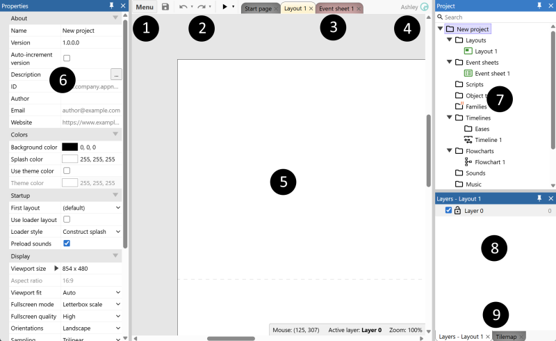
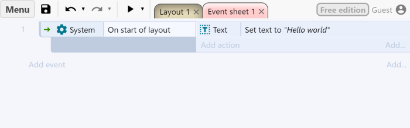

Back to Construct first contact
CONSTRUCT WORKSHOP / CONTINUE YOUR PROJECT
Make your scene respond.
You already made a tap reveal a thought. Now build a second response and decide how the two discoveries work together. Keep the same .c3p project and work in Construct beside this guide.
01 / RETURN TO YOUR SCENE
Start with the response that works.
- Open Construct 3. Choose Menu > Project > Open and open your saved .c3p.
- In the Project Bar, expand Layouts and open your map.
- Use Preview layout. Tap the object that reveals HiddenThought. Check that it works, then return to editing.
- Save a separate copy, such as
my-scene-next.c3p.

I do not have the first response yet.
Use the first Construct walkthrough to make one tap reveal HiddenThought, then return here.
02 / TWO PLACES, TWO DISCOVERIES
Choose another thing to uncover.
Choose a second visible object in your scene. Give it a different message: a memory, a clue, a rumour or another character's perspective.
For example, the entrance reveals “I always arrive too early.” The garden reveals “Someone has been waiting here.” Use your own places and words.
Point to both tap targets and decide which sentence each should reveal.
03 / BUILD THE SECOND RESPONSE
One new message. One new rule.
- Double-click empty space in the layout. Search for Text and insert a new object type. Name it
SecondThought, separate from HiddenThought. - Place it inside the map. Set its Text property to your second sentence. Turn Initially visible off. Make the box wide enough to read.
- Click empty space in the layout. Read its Event sheet property and open that sheet from the Project Bar.
- Click Add event. Choose Touch > On tap object, select the second visible object and confirm.
- On that new row, choose Add action > SecondThought > Set visible. Choose Visible and confirm.
- Preview layout. Tap each target. Each should reveal its own message.

Test from the beginning: reload Preview. Both messages should start hidden.
The wrong message appears, or both appear together.
Check the object named in each action. The first rule should show HiddenThought, the second SecondThought. Two instances of the same Text object type can both be affected by Set visible. Use a separate object type for each message.
04 / CHANGE THE EXPERIENCE
Show one thought at a time.
Make the latest discovery replace the previous one.
- On the first tap row, keep the action that shows HiddenThought. Add another action on the same row: SecondThought > Set visible > Invisible.
- On the second tap row, keep the action that shows SecondThought. Add HiddenThought > Set visible > Invisible.
- Preview. Tap the first target, then the second, then the first again. Only the latest message should stay visible.
You kept the tap conditions and changed the actions. Choose whether one message at a time or several messages together fits your story better.
05 / LET SOMEONE EXPLORE
Can a visitor discover it?
Give a partner the fresh preview. Let them explore before telling them where to tap. Watch what they try and whether they can read the responses.
Change one thing after the test: move a target, improve its label or reposition a message. Preview and try again. You can test the same path yourself if a partner is unavailable.
Save your .c3p. Keep a short note: Tapping ____ reveals ____. After testing, I changed ____. Next I want ____.
Continue: rooms and rules in Construct